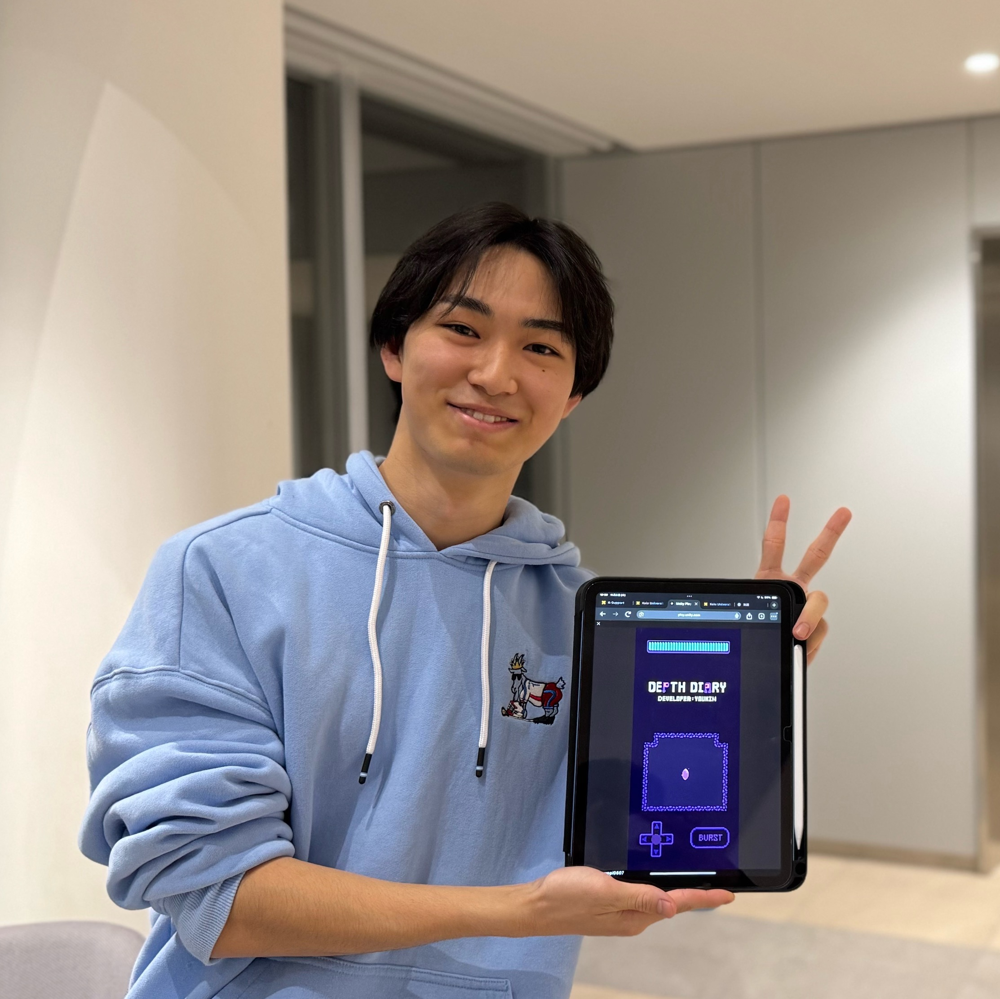
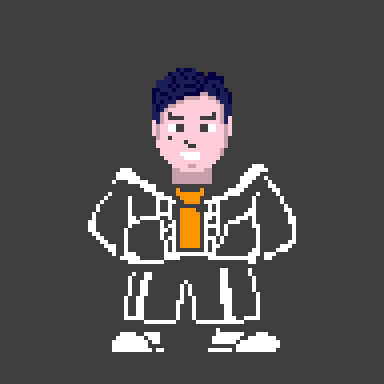

時間を忘れてプレイできるゲームを。
矢追陽平（ようきん）
PROFILE


Name
矢追陽平（ヨウキン）

About Me
「面白い」ゲームを開発する大学生
コミュニケーションが生まれるゲームを作りたい。
慶應義塾大学環境情報学部環境情報学科2年
受賞歴
2024年ゲームクリエイター甲子園U18 セミファイナル進出 作品：DEPTH DIARY
2025年ゲームクリエイター甲子園 ノミネート作品 作品：ぼくのにっき
Made in Japan XR Project XR Hackathon2026 優勝 作品：Sausage Smash
神ゲー創造主エボリューション2026 一次審査通過 作品：PiNTCH WiTCH // Shadow play
インターン・バイト経験
中高生向けUnity教育のメンターを担当しています。技術指導を通して、基礎から応用まであらゆるレベルの生徒に対応できる技術力を徹底的に習得しました。専門用語を避けて説明する言語化能力と、即座に問題を解決する基礎力を確立しました。
会社の公式サイト ↗商業ゲーム開発にプログラマーとして参画しています。自己解決のためのリサーチ力と、迅速なトライアンドエラーによる開発スキルを実践で体得しました。
会社の公式サイト ↗3人チームで、2日間のゲーム開発型インターンにUnityエンジニアとして参加しました。事前準備期間から企画、アセット選定、タスク分割、スケジュール作成を行い、当日は実装やビルド確認、ゲームの手触り調整を担当しました。短期間の開発を通して、進捗が遅れた際に実装の優先度を見直し、完成に向けてスケジュールを調整する重要性を学びました。
会社の公式サイト ↗制作作品：フライパン返し
研究
慶應SFCのウェブアプリケーションの研究会「服部研」に2025年9月から所属しています。Unity
ML-Agentsを用いたCPUの制作を行っています。強化学習を用いて、道を学習するAIを制作しました。その後、PONGゲームのCPUを模倣学習を用いて作成、完成させました。最終的に、鬼ごっこゲームの鬼AIを段階学習（Curriculum
Learning）を用いて開発し、リリースしました。
関連リンク:
・PONG
ゲームリポジトリ
・鬼ごっこゲームリポジトリ
・鬼ごっこゲーム
Unityroom
Arduinoとサーボモーターを用いて、スイッチを押すと機械自身が押し戻す「Useless Machine」を制作しました。単に押し戻すだけでなく、動作から人間らしさや意思を感じられるよう、押し返す速度や蓋の開閉タイミングを変えて複数の振る舞いを試作しました。最終的にはAT42QT1010静電容量式タッチセンサーと銅箔テープを導入し、スイッチ付近に触れている間は待機し、指を離すとすぐに押し返す仕組みを実装しました。MDFの筐体もIllustratorで図面を作成し、レーザーカッターで加工しています。「機械に見張られている」ように感じるインタラクションを目指して調整を重ねました。
関連リンク:
・制作記録
小型ロボットtoioを用いて、現実世界とデジタルゲームを組み合わせた体験を研究しています。Unityとtoio SDK for Unityで接続、移動、座標・角度取得、スマートフォン操作を検証し、鬼ごっこ、シューティング、スネークゲームを試作しました。その後、Digital Twinによる実機とUnity上のシミュレーションの連携や、複数のtoioマットをまたぐ座標処理を実装しました。さらに、身の回りの物を障害物として配置し、スマートフォンで撮影した情報をステージへ反映する方法を検討しました。最終的にはMeta Quest 3を導入し、VRからは見えない現実の障害物と、現実世界を移動するtoioを組み合わせたゲームへ発展させました。
関連リンク:
・制作・研究記録
・トラップ対戦ゲーム
メディア掲載
2026年8月19日 データサイエンス百景 【慶應義塾大学SFC】ソフトとハードの両面から新しいゲーム体験を追求する！
2025年11月14日 KamoTalk（カモトーク） 高校でゲームをリリース、SFCで世界を目指す。クリエイター矢追陽平が「ものづくりで世界と繋がる」物語
PROJECTS
PiNTCH WiTCH // Shadow play
影を使って2D世界の少女を救う、ハンドトラッキング対応ゲーム。
▶︎ クリックして詳細を見る
フライパン返し
スマホをフライパンに見立てて振り、パンケーキをひっくり返す体感アクションゲーム。
▶︎ クリックして詳細を見る
あなたはシロです。
白と黒の状態を切り替え、警察の動きを利用して進む3Dアクションパズルゲーム。
▶︎ クリックして詳細を見る
Sausage Smash
ソーセージをスマッシュして、迫り来る野菜を迎え撃つVRアクションゲーム。
▶︎ クリックして詳細を見る
ぼくのにっき
ノートに書き込んで進む2Dアクションホラーゲーム。
▶︎ クリックして詳細を見る
DEPTH DIARY
スマホで簡単操作！2Dドットアドベンチャーゲーム
▶︎ クリックして詳細を見る
スライムスライス
スライムを切り裂け！3Dカジュアルゲーム
▶︎ クリックして詳細を見る
CIRCUSAL
Googleストアにリリース！2Dカジュアルゲーム
▶︎ クリックして詳細を見る
KamoRogue
カモが地下ダンジョンを進む2Dローグライクアクションゲーム。
▶︎ クリックして詳細を見る
EXPERIENCE
ゲーム開発への情熱と挑戦 (小・中・高時代)
様々なコンシューマーゲームやPCオンラインゲームに熱中した経験から、中学3年生でプログラミングとUnityに出会い、ゲーム開発の道に進みました。
[挑戦] 高校1年: Google Playに初リリース まずは「完成させる」ことを目標に、初の自作ゲームをGoogle Playにリリースしました。
[挫折と学び] 高校2年: 長期開発の失敗
次に長期開発に挑戦しましたが、計画不足により挫折しました。この経験から、アイデアの言語化、タスク管理、そして実現可能なスケジュールを立てる重要性を痛感しました。
[成果] 高校3年: 挫折からの再起 失敗の反省を活かし、7ヶ月の制作期間を設けてゲームを開発しました。「ゲームクリエイター甲子園
U18」にて、セミファイナルに進出することができました。
株式会社ライフイズテック/ Unityメンター （インターン）(2025年7月〜)
中高生にUnityの指導、エラー対応、環境構築など「作りたいゲーム」を実現するための技術サポートを担当しています。基礎から応用まで幅広いレベルの生徒に対応しており、この経験を通じて、Unityのバージョン差や未知のエラーにも即時対応する「柔軟な問題解決能力」と、技術を分かりやすく伝える「指導力」が身につきました。
株式会社シフト / プログラマー (アルバイト) (2025年10月〜)
プログラマーとして、UnityおよびJavaを用いたゲーム開発業務に携わっています。開発においては、未知の仕様や機能の実装に直面することも多々ありますが、インターネットでのリサーチと迅速なトライアンドエラーを繰り返すことで、自己解決する能力を養っています。
10人規模のチーム開発リーダー (2025年11月〜)
インターン先で知り合った仲間に声をかけ、10人規模のゲーム開発プロジェクトを立ち上げ、リーダーとして全体を統括しています。
担当業務:
・コーディングタスクとデザインタスクの割り振り
・コーディングレビューの実施
・Gitコンフリクトの解消
・UIデザインの設計と実装
習得したスキル:
この経験を通じて、チーム開発における実践的なGitHub運用（ブランチ管理、Pull
Requestレビュー）、コンフリクトを防ぐためのタスク設計、ゲーム全体の進捗管理と次に必要なタスクの見極め、そしてチームをまとめるリーダーシップを学びました。NotionとDiscordを駆使して、円滑なコミュニケーションと効率的な開発フローを実現しています。
目標:
中間目標として「神ゲー創造主エボリューション2026」への出展、最終目標としてApple Store & Google Playへのリリースを掲げています。
BitSummit Game Jam 2026 / Unityプログラマー (2026年2月14日〜)
日本最大級のインディーゲームイベント「BitSummit」が主催するゲームジャムに、Unityプログラマーとして参加します。2026年2月14日からスタートし、3ヶ月間という限られた期間内でゲーム開発に挑戦します。短期間での集中的な開発を通じて、限られた時間の中での優先順位付け、効率的な実装、そしてチームでの高速開発スキルを磨くことを目指しています。
SKILLS
Languages
- C# (Unity)
- JavaScript
- HTML/CSS
- Python
Tools
- Unity
- Git/Github
- Blender
- Figma
Others
- ゲームアイデア
- 企画書作成
- 書道